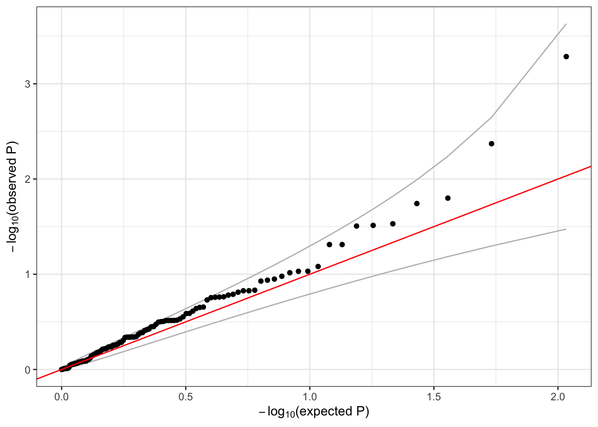

9 Annotation informed aggregate association tests
9.1 Aggregate unit for association testing exercise
Now that we know how to make genome annotation informed aggregation units using Annotation Explorer, such as the gene-based variant aggregation units, we can proceed to an association testing exercise. NOTE : The exercises in this workshop are based on the 1000 genomes dataset mapped to genome build GRCh37/hg19. Because the aggregation units we generated using the Annotation Explorer in the previous section are mapped to GRCh38 and are not based on 1000 genomes data, we will not be using them in this section. Instead, in this exercise we will be using pre-computed aggregation units based on 1000 genomes mapped to GRCh37 so that the annotation positions are consistent with the build used for genotyping data in the workshop. These gene-based units include SNVs from all chromosomes (no indels, and not just chromosome 1 as before). Each genic unit was specified to include the set of SNVs falling within a GENCODE-defined gene boundaries and the 20 kb flanking regions upstream and downstream of that range. This set of aggregation units is not filtered by CADD score or consequence.
The aggregation units are defined in an R dataframe in the format consistent with the output from Annotation Explorer and compatible with the GENESIS association testing workflows. Each row of the dataframe specifies a variant (chr, pos, ref, alt) and the group identifier (group_id) it is a part of. Multiple rows with different group identifiers can be specified to assign a variant to different groups (i.e., a variant can be assigned to multiple genes).
Begin by loading the aggregation units:
library(dplyr)
repo_path <- "https://github.com/UW-GAC/SISG_2021/raw/master"
if (!dir.exists("data")) dir.create("data")
aggfile <- "data/variants_by_gene.RData"
if (!file.exists(aggfile)) download.file(file.path(repo_path, aggfile), aggfile)
aggunit <- get(load(aggfile))
head(aggunit)## # A tibble: 6 x 5
## group_id chr pos ref alt
## <chr> <fct> <int> <chr> <chr>
## 1 ENSG00000131591.13 1 1025045 C T
## 2 ENSG00000169962.4 1 1265550 C T
## 3 ENSG00000205090.4 1 1472676 T C
## 4 ENSG00000171603.12 1 9788518 G A
## 5 ENSG00000204624.6 1 11593461 C T
## 6 ENSG00000270914.1 1 12068870 G A# an example of a variant that is present in multiple groups
mult <- aggunit %>%
group_by(chr, pos) %>%
summarise(n=n()) %>%
filter(n > 1)
inner_join(aggunit, mult[2,1:2])## # A tibble: 2 x 5
## group_id chr pos ref alt
## <chr> <fct> <int> <chr> <chr>
## 1 ENSG00000187952.8 1 21742183 G A
## 2 ENSG00000227001.2 1 21742183 G A9.2 Association testing with aggregate units
We can run burden and SKAT tests on each of these units using the same assocTestAggregate function we used previously. We define a SeqVarListIterator object where each list element is an aggregate unit. The constructor expects a GRangesList, so we use the TopmedPipeline function aggregateGRangesList to quickly convert our single dataframe to the required format. This function can account for multiallelic variants (the same chromosome, position, and ref, but different alt alleles).
# open the GDS file
library(SeqVarTools)
gdsfile <- "data/1KG_phase3_subset_chr1.gds"
if (!file.exists(gdsfile)) download.file(file.path(repo_path, gdsfile), gdsfile)
gdsfmt::showfile.gds(closeall=TRUE) # make sure file is not already open
gds <- seqOpen(gdsfile)
# sample annotation file
annotfile <- "data/sample_phenotype_pcs.RData"
if (!file.exists(annotfile)) download.file(file.path(repo_path, annotfile), aggfile)
annot <- get(load(annotfile))
# make the seqVarData object
seqData <- SeqVarData(gds, sampleData=annot)
# subset to chromosome 1
aggunit1 <- filter(aggunit, chr == 1)
# create the GRangesList object
library(TopmedPipeline)
aggVarList <- aggregateGRangesList(aggunit1)
length(aggVarList)## [1] 127head(names(aggVarList))## [1] "ENSG00000131591.13" "ENSG00000169962.4" "ENSG00000205090.4" "ENSG00000171603.12" "ENSG00000204624.6" "ENSG00000270914.1"aggVarList[[1]]## GRanges object with 1 range and 2 metadata columns:
## seqnames ranges strand | ref alt
## <Rle> <IRanges> <Rle> | <character> <character>
## [1] 1 1025045 * | C T
## -------
## seqinfo: 23 sequences from an unspecified genome; no seqlengths# construct the iterator using the SeqVarListIterator function
iterator <- SeqVarListIterator(seqData, variantRanges=aggVarList, verbose=FALSE)As in the previous section, we must load the null model we fit earlier before running the association test.
# load the null model
nullmodfile <- "data/null_mixed_model.RData"
if (!file.exists(nullmodfile)) download.file(file.path(repo_path, nullmodfile), nullmodfile)
nullmod <- get(load(nullmodfile))
# run the burden test
library(GENESIS)
assoc <- assocTestAggregate(iterator, nullmod, test="Burden", AF.max=0.1, weight.beta=c(1,1))## # of selected samples: 1,126names(assoc)## [1] "results" "variantInfo"head(assoc$results)## n.site n.alt n.sample.alt Score Score.SE Score.Stat Score.pval Est Est.SE PVE
## ENSG00000131591.13 1 1 1 -0.294335296 0.10297237 -2.85839107 0.004257953 -27.7588166 9.711343 7.314586e-03
## ENSG00000169962.4 1 2 2 -0.099409087 0.10781157 -0.92206326 0.356495581 -8.5525446 9.275442 7.611458e-04
## ENSG00000205090.4 1 16 16 0.148782099 0.34684383 0.42895991 0.667952399 1.2367523 2.883142 1.647327e-04
## ENSG00000171603.12 1 2 2 0.003544954 0.11065596 0.03203582 0.974443489 0.2895083 9.037019 9.187937e-07
## ENSG00000204624.6 1 1 1 -0.023265336 0.07677702 -0.30302476 0.761870996 -3.9468160 13.024731 8.220584e-05
## ENSG00000270914.1 1 14 14 -0.775650027 0.32814006 -2.36377727 0.018089684 -7.2035619 3.047479 5.002183e-03head(names(assoc$variantInfo))## [1] "ENSG00000131591.13" "ENSG00000169962.4" "ENSG00000205090.4" "ENSG00000171603.12" "ENSG00000204624.6" "ENSG00000270914.1"assoc$variantInfo[[3]]## variant.id chr pos ref alt allele.index n.obs freq MAC weight
## 1 5 1 1472676 T C 1 1126 0.007104796 16 1We can make our usual QQ plot
library(ggplot2)
qqPlot <- function(pval) {
pval <- pval[!is.na(pval)]
n <- length(pval)
x <- 1:n
dat <- data.frame(obs=sort(pval),
exp=x/n,
upper=qbeta(0.025, x, rev(x)),
lower=qbeta(0.975, x, rev(x)))
ggplot(dat, aes(-log10(exp), -log10(obs))) +
geom_line(aes(-log10(exp), -log10(upper)), color="gray") +
geom_line(aes(-log10(exp), -log10(lower)), color="gray") +
geom_point() +
geom_abline(intercept=0, slope=1, color="red") +
xlab(expression(paste(-log[10], "(expected P)"))) +
ylab(expression(paste(-log[10], "(observed P)"))) +
theme_bw()
}
qqPlot(assoc$results$Score.pval)
9.3 Exercise
- Since we are working with a subset of the data, many of the genes listed in
group_idhave a very small number of variants. Create a new set of aggregation units based on position, rather than gene name – create 10 units that are 1MB long and span all of the chr1 variants by using the TopmedPipeline functionaggregateGRanges. Run a SKAT test using those units and aSeqVarRangeIteratorobject.
9.4 Solution
- Since we are working with a subset of the data, many of the genes listed in
group_idhave a very small number of variants. Create a new set of aggregation units based on position, rather than gene name – create 10 units that are 1MB long and span all of the chr1 variants by using the TopmedPipeline functionaggregateGRanges. Run a SKAT test with the Wu weights using those units and aSeqVarRangeIteratorobject.
# minimum variant position
minp <- min(aggunit1$pos)
# maximum variant position
maxp <- max(aggunit1$pos)
# create a data frame breaking the position range into 10 pieces
aggByPos <- data.frame(chr=1,
start=seq(minp, maxp-1e6, length.out=10),
end=seq(minp+1e6, maxp, length.out=10))
aggByPos$group_id <- 1:nrow(aggByPos)
dim(aggByPos)## [1] 10 4head(aggByPos)## chr start end group_id
## 1 1 1025045 2025045 1
## 2 1 28440219 29440219 2
## 3 1 55855393 56855393 3
## 4 1 83270568 84270568 4
## 5 1 110685742 111685742 5
## 6 1 138100916 139100916 6aggVarList <- aggregateGRanges(aggByPos)
aggVarList## GRanges object with 10 ranges and 0 metadata columns:
## seqnames ranges strand
## <Rle> <IRanges> <Rle>
## 1 1 1025045-2025045 *
## 2 1 28440219-29440219 *
## 3 1 55855393-56855393 *
## 4 1 83270567-84270567 *
## 5 1 110685741-111685741 *
## 6 1 138100916-139100916 *
## 7 1 165516090-166516090 *
## 8 1 192931264-193931264 *
## 9 1 220346438-221346438 *
## 10 1 247761613-248761613 *
## -------
## seqinfo: 1 sequence from an unspecified genome; no seqlengthsseqResetFilter(seqData, verbose=FALSE)
iterator <- SeqVarRangeIterator(seqData, variantRanges=aggVarList, verbose=FALSE)
assoc <- assocTestAggregate(iterator,
nullmod,
test="SKAT",
AF.max=0.1,
weight.beta=c(1,25))## # of selected samples: 1,126assoc$results## n.site n.alt n.sample.alt Q pval err pval.method
## 1 4 24 24 79.08763 0.3995046 0 saddlepoint
## 2 4 152 137 80.38214 0.4753546 0 saddlepoint
## 3 2 32 32 19.09239 0.6708608 0 saddlepoint
## 4 5 80 76 138.54683 0.4490908 0 saddlepoint
## 5 0 0 0 NA NA NA <NA>
## 6 0 0 0 NA NA NA <NA>
## 7 3 65 62 310.46293 0.1278045 0 saddlepoint
## 8 4 18 18 92.32706 0.2701244 0 saddlepoint
## 9 6 11 11 29.61999 0.5637511 0 integration
## 10 4 33 33 155.50853 0.2035247 0 saddlepointseqClose(seqData)